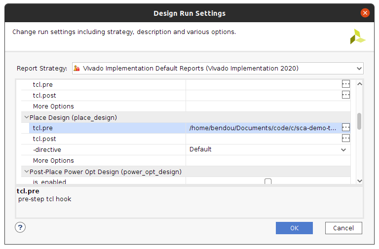

Tuto #1 - Install the Framework¶
Duration: 1-2 hours (more if you need to download the Xilinx tools)
Goals¶
The goal of this installation tutorial is to setup the SCAbox framework. This can be done in two steps :
Install the hardware (Xilinx Vivado)
Install the software (Xilinx Vitis)
It is mainly useful to go this way when you want to customize the framework by adding sensors, crypto-cores or use another development board.
Requirements¶
A Xilinx Zynq-7000 SoC development board.
Xilinx Vivado
Xilinx Vitis
Any terminal emulator such as PuTTY, TeraTerm or picocom
Emulator setup¶
The terminal emulator allows to communicate via UART with the SoC. It must be configured properly in order to work and allow command typing. Bellow is given the emulator configuration used :
port is : /dev/ttyUSBx
flowcontrol : none
baudrate is : 921600
parity is : none
databits are : 8
stopbits are : 1
local echo is : yes
Note
If your terminal provide it, you can also use the local line edit.
Port name can vary according to your OS, eg. on windows its COMx
Install the Hardware¶
In this step we explain how to :
Generate the block design from the demo .tcl
Generate the hardware specification or BSP
Generate the block design¶
To start the tutorial launch Vivado
Create a new RTL project without any sources¶
Click on File > Project > New
Select project name and location
Choose RTL project
Do not add any sources
Select the part/board you are using
Create the project
{kind=link}
{kind=link}
Generate the hardware¶
At this point, few steps are required to have a working bitstream.
Generate a HDL wrapper¶
Go into the Sources tab
Right click on system under Design Sources
Select Create a HDL wrapper
Let Vivado manage the wrapper
Click on Flow Navigator > IP Integrator > Generate Block Design
Click on Generate to generate the wrapper
Configure manual sensors placement¶
Go into the Design Runs tab
Right click on impl_1 and select Change Run Settings
Go to the Place Design section in the list
Change the tcl.pre property by clicking the browse button
Select new script and browse for the file [demo root]/tcl/place.tcl
Avoid copying sources into the project and click Ok
Once it is done your Place Design configuration must be the same as follows :
{kind=link}
Add constraints¶
Go into the Sources tab
Click on the add button
Select Add or create constraints
Add the constraint file [demo root]/xdc/zybo_cst.xdc
Note You might have to specify your own constraints if you are not using a Zybo board
Generate bitstream and specification¶
Click on Flow Navigator > Program and Debug > Generate Bitstream
Wait for the synthesis, implementation and bitstream writing to finish
Click on File > Export > Export Hardware
Select Fixed
Select Include bitstream
Name your file .xsa and select location
Click on finish to generate the specification
At this point Vivado must have created a file .xsa at the location you gave. This file will later be used by Vitis to generate a platform project that will handle all our hardware and drivers for the design we created.
Note If you are using SDK instead of Vitis, you do not have hardware specification. Instead just launch SDK via Vivado and a BSP will automatically be created with the corresponding hardware.
Install the Software¶
If you completed the previous steps or if you are already provided with a BSP or a hardware specification you are now able to bind the hardware with the demo project. To do so :
Create a new system project
Launch the application
Create a new system project¶
You must launch Vitis in order to follow the steps bellow.
Create a new platform project¶
Click on File > New > Platform Project
Name your platform
Browse for your .xsa file
Click on Finish to create the platform
Note In SDK just launch SDK from Vivado with the hardware project open and the platform project will be created.
Create a new application project¶
Click on File > New > Application Project
Select the previously added platform
Name the project and let default values for other parameters
Ensure the standalone domain is selected
Select the Empty Application template
Right click on the application project in the Explorer
Click on Import Sources
Add the .c and .h files in [demo root]/src
Add includes to the project¶
Right click on the application project previously created on the Explorer
Select C/C++ Build Settings
In the Tool Settings tab go to ARM v7 gcc compiler > Directories
Add each directory in the [demo root]/modules as Include Paths
If you correctly imported the includes you must have the following configuration :

Generate a linker script¶
It is likely that the default linker script will set the heap and stack size to smaller values than what is needed for the demo.
Right click on the application project previously created on the Explorer
Select Generate linker script
Modify the Heap Size to 32KB
Modify the Stack Size to 32KB
Note These values are arbitrary and might not be optimal be guarantee that the demo do not overflows.
Launch the application¶
Build the project¶
Right click on the platform project
Click on Build Project
Do the same for the application project
Build the system project
Launch UART communication¶
Plug your board and turn it ON
Ensure the mode register is set to JTAG (JP5 on Zybo)
Launch your terminal emulator
Configure a serial connection as shown above
Start a session with the emulator
Run the application¶
Right click on the application project
Click on Run As > Launch on Hardware
Switch to the terminal session
Ensure local echo is on for the session.
Into the terminal type the command
tdcPress Enter
If everything went well, you should see an output similar to the following obtained with picocom :

The value displayed by the command is the current sensors value. The last displayed line must be the one bellow, indicating that the SoC is ready to receive commands.
>
Conclusion¶
In this tutorial you learn how to generate the test-bench block design and a bitstream associated to it. Then you used this bitstream to create a hardware specification and integrated it into a demo application for the test-bench.
Keep in mind that mastering this workflow will allow you to customize both the hardware and software of the test-bench. The block-design and the demo are only an example of what can be achieved with the framework.
You can try to customize the IPs already present by right-clicking on it and select Customize IP. You can also change the IPs already present with different ones. You can adapt the block-design to your board if you are not using a Zybo-Z7010.